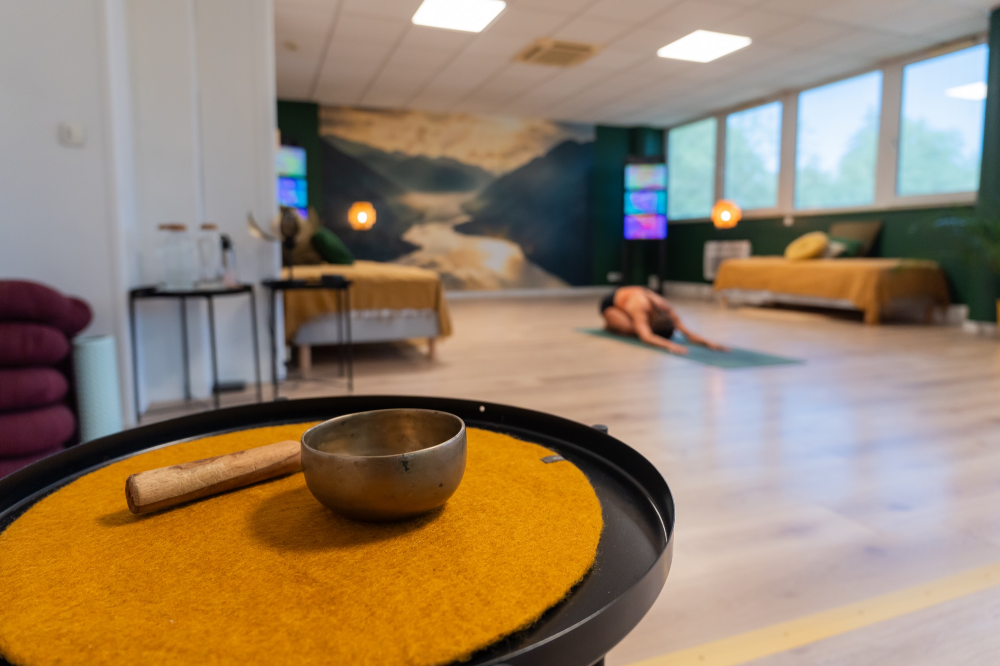

Le journal d'Aliyoga
Des mots pour accompagner ta pratique, au fil des saisons.
À lire

Déprime saisonnière, besoin de cocon, feu digestif qui faiblit… Mes rituels et une petite pratique pour ralentir, se réchauffer et faire du yoga la racine de ses journées.
Lire l'article